鍼灸・柔整国家試験予備校｜国家試験に受かりたいという強い意志を持っている方でお困りの方はTeaching Beauty国家試験予備校へ。
電話でのご予約・お問い合わせはTEL.03-6413-7803
〒154-0014 東京都世田谷区新町3-21-1さくらウェルガーデン301
鍼灸柔整国家試験予備校／セミナー依頼seminar
鍼灸師・柔道整復師・按摩マッサージ師国家試験予備校
【第22回、23回、24回柔整師・鍼灸師国家試験】生徒の合格率 3年連続１００％
柔道整復師 第23回 全国合格率 65.7％
柔道整復師 第24回 全国合格率 64.3％
柔道整復師 第25回 全国合格率 63.5％
柔道整復師 第26回 全国合格率 58.4％
鍼灸師 第23回 全国合格率 76.5％
鍼灸師 第24回 全国合格率 73.4％
鍼灸師 第25回 全国合格率 67.0％
鍼灸師 第26回 全国合格率 57.7％
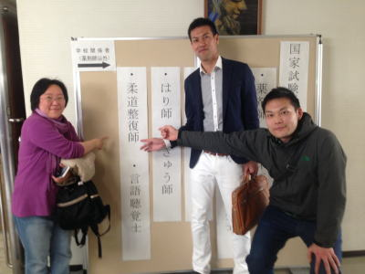
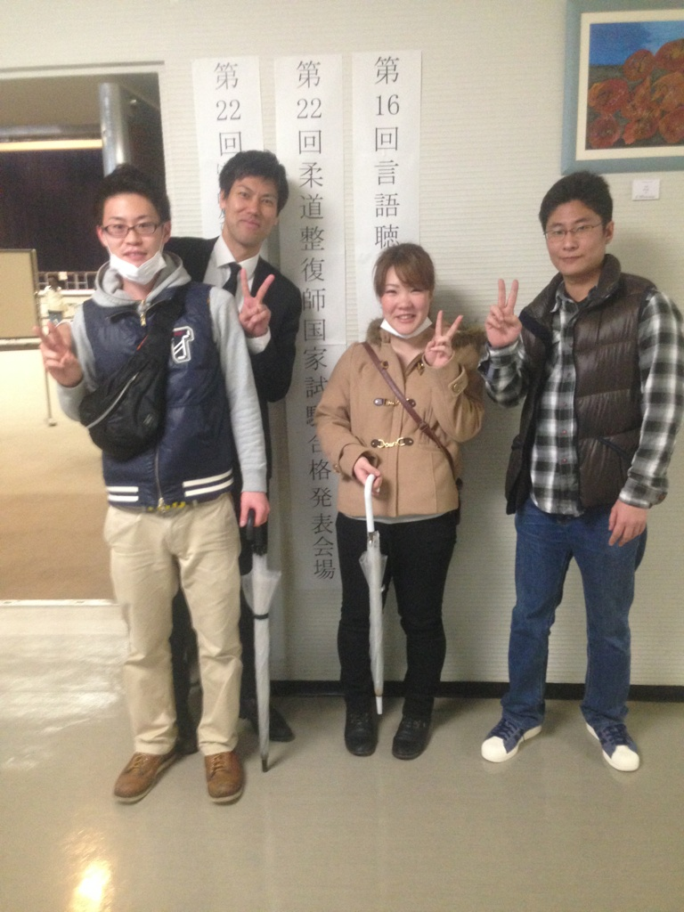
【当予備校が合格率100％の理由】
①１年、2年生のうちからでも講義が聞ける
90分 ￥15,000 （税込）
1年生、２年生の対象としたコースになりますが、３年生、浪人生でもこの教科だけができないという方には良いと思います。
学校での授業の復習、学校だけの授業では国家試験が不安という方におススメです。留年対策なども行っております。
②既卒生の全国平均合格率9.7％でも当塾の合格率100％
月謝制の通学も可能
３年生、浪人生を対象としたコースになります。
学校の講義だけでは国家試験に受かるか心配という方、卒業していて何年も自己学習しているが受験が不安という方に向いております。
週１回を基本とし国家試験直前には週２回の講義を行って合格を目指します。
やる気があれば仕事をしていても国家試験に受かることが可能です。
毎日学校に通うと仕事もできない。時間の制限が多いという方にはお勧めです。週1回でも合格率100％です。
③現役、教員による徹底指導
当予備校は各養成学校の人気講師をお呼びして受験対策講義を行っております。実践的な内容をお教えするので卒業後にも大きく関係してきます。
④週に5回予備校に通わなくても合格できる
他の予備校は週5回通わないといけないなど、時間的制約が大きくなってしまいます。
当予備校は本人のやる気と教師の言う課題をしっかりこなせれば、月18回の通学でも十分に国家試験に合格可能です。
やる気があるけど、仕事を辞めることができない方などに向いております。
逆に、宿題がやってこれない、課題の提出ができない方は週5回の通学の予備校に行くことをお勧めします。
⑤募集定員5名と少人数のため個人指導で勉強できる
学校時代に国家試験に合格できない方は少人数のクラスで教師の目がよく届く状況で授業を受けることによって、その人の苦手分野が明確になり適切なアドバイスができるようになります。
⑥塾長はNHKにて3年レギュラーを務めていました
鍼灸業界でNHKで3年間レギュラーを務めた人はいません。
また、東洋医学の『ツボ』をテーマとした番組コーナーは今までにありません。
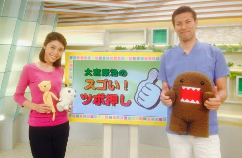
【令和5年度】
募集定員 5名！！
本年度の募集は終了いたしました。
※現在、問い合わせが増えているため、今後は通信制も検討中なので、通信制を始める場合はHPにてお知らせいたします。
鍼灸師、柔整師は近年、医療系国家試験で最も合格率が低い試験になります。
そのため、しっかりと勉強しないと鍼灸師、柔整師になることはできません。
そのため、学校だけでは合格ラインに達しません。
当サロンではどうしても鍼灸師、按摩マッサージ師、柔道整復師(柔整師)になりたい方に対して国家試験予備校を開催しています。
人数は少人数制（5人まで）でわからない箇所を徹底的に指導し、国家試験合格を目指します。
他の予備校と違う点としては、1コマから授業を受けられることが可能です。
学校の期末テスト対策や、苦手分野の講義をもう一度受けたい、今の学校の先生に頼るのに不安があるなど、当サロンでは様々なご要望にお応えします。
教師歴１５年の教員による指導になります。
また、1年間コースの方は週１回の講義で国家試験に合格できるように指導しています。
他の予備校は週５回通わないといけないので仕事をしている方には辛いと思います。
しかし、当塾は週１回の講義で合格率１００％に導いております。
各養成学校を数々、合格率100％に導いてきた自信と実力があります。
信頼して頂き、共に頑張りましょう。全力で応援致します。
柔整の場合は必修問題があるので、受かりにくいのですがしっかりとしたカリキュラムにより指導する事により合格が可能となります。
柔整の各学校で行わない必修対策を当予備校では実施しています。
必修はしっかりと対策する事により、必修で不合格になることはありえません。
必修で落ちてしまうという事は柔整の各養成校が対策を取っていない証拠なのです。
また、当予備校では一流の養成学校現役講師をそろえての指導となりますので各養成学校より豪華なメンバーでの指導とります。
そのため、国家資格を持っているのに習いたいという方も多く見受けられます。
【次のような方にお勧めです】
・絶対に合格したい方
・何を勉強してよいかわからない方
・今まで勉強をあまりしてこなかった方
・浪人生の方
・やる気はあるけど点数が伸びない方
・少人数制で習いたい方
・国家試験は取得したけど改めて勉強をしたい方
・東洋医学やツボを勉強したい方
・週5回も予備校に通えないという忙しい方
※医師、歯科医師、獣医師、薬剤師、看護師、PT・OT、整体師、主婦など
資格は問いません。
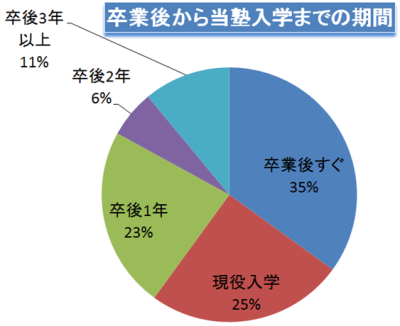
【当鍼灸柔整予備校入学者の出身校】
・日本医療ビジネス大学校
・朋友柔道整復師専門学校
・帝京平成大学
・関東鍼灸専門学校
・新宿柔整鍼灸歯科衛生専門学校
・アルファ医療福祉専門学校
・横浜医療専門学校
・日本鍼灸理療専門学校
・首都医校
・東京医療専門学校
・日本医学柔整専門学校
・日本柔道整復専門学校
・お茶の水はりきゅう専門学校
・北豊島医療専門学校
・浦和鍼灸専門学校
・国際鍼灸専門学校
・首都医校
・呉竹鍼灸柔整専門学校
【指導可能な科目】
解剖学、生理学、病理学、運動学、リハビリテーション医学、外科学
、整形外科学、衛生学、関係法規、臨床医学各論、臨床医学総論、
一般臨床医学、経絡経穴概論、あん摩マッサージ指圧理論、東洋医学概論、
東洋医学臨床論、柔道整復学、鍼灸理論などの科目の授業を行います。
【当予備校に入塾を考えている方へ】
既卒生が一人で勉強して受かる可能性は極めて低いのです。
なぜかと言うと、3年間の専門学校や4年間の大学で勉強を無理やりにでもさせられる環境で国家試験に合格することができなかった方が、仕事を行いながら自分で勉強の時間を確保し、傾向と対策を行って受かることはできないでしょう。
ましてや、卒業して期間が空けば空くほど国家試験の傾向が大きく変わってしまいますし、過去問ベースの問題では近年の国家試験に合格することはできません。
数字から見ても、第26回国家試験既卒生の合格率はなんと9.7％しか受かっていません。9.7％の合格率の大学に合格できると思いますか？
東大の合格率31％ですよ。
ちなみに超難関試験の弁護士試験の合格率ですら25.9％です。
何年も何年も勉強、不合格といった無駄な時間をかけるより当予備校にお任せください。私の養成学校の教え子には10年間も毎年受けては落ちを繰り返している方がいます。
予備校に入るには少しお金はかかるけど、1年で受かってしまえば必ず元が取れますよ。資格手当が月に3万円付くと考えると4年間で144万円です。
資格手当が10万円付く方なら1年で学費が払えてしまうのです。
資格があるのとないのとでは給料に大きな差が出てしまいます。
鍼灸師、柔道整復師、按摩マッサージ師にどうしてもになりたい方は当予備校にお問合せ下さい。
講義回数や苦手箇所など、まずはお電話やﾒｰﾙにてご相談下さい。
無料相談:03-6413-7803
【H30年度 カリキュラム】
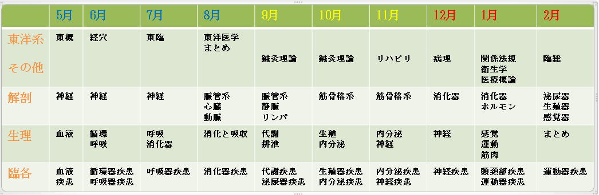
・5～6月までが基礎固めの時期となります。
・9～11月で知識の定着を行います。
・12～2月では国家試験に特化した対策講義を行い1点でも多く点数が取れるように実践的に授業を行います。
【H30年度 時間割】
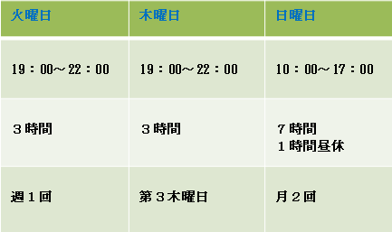
※計、月18回×90分の講義をコースとします。
この他に鍼灸学校同様に模擬試験3回（1回/4時間）、科目別試験を行います。
ーーーーーーーーーーーーーーーーーーーーーーーーーーーーーーーーーーーーーーーーーーーーーーーーーーーーーーー
＝＝＝＝締め切り間近＝＝＝＝
【学費】
入学金10万円
学費通常価格月27万円（15,000×90分×18ｺﾏ）
→月15万円(大幅値引き！！) なんと実質1ｺﾏの講義 約8,000円
ーーーーーーーーーーーーーーーーーーーーーーーーーーーーーーーーーーーーーーーーーーーーーーーーーーーーーーー
⇒模擬授業①（運動学、リハビリテーション医学分野：てこ）
⇒模擬授業②（東洋医学概論：陰陽五行説）
⇒模擬授業③（東洋医学概論：五臓の関係性）
ーーーーーーーーーーーーーーーーーーーーーーーーーーーーーーーーーーーーーーーーーーーーーーーーーーーーーーーー
【当予備校卒業生の声】
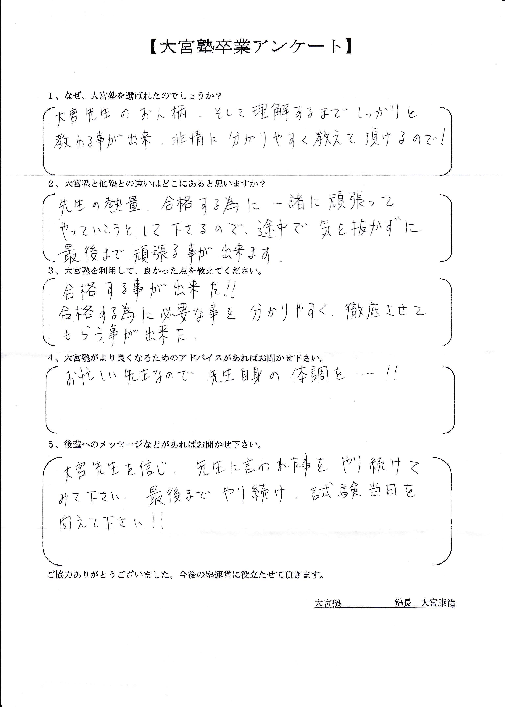
【Fさん 30代 男性】
１、なぜ大宮塾を選ばれたのでしょうか？
大宮先生のお人柄、そして理解するまでしっかりと教わることが出来、非常にわかりやすく教えて頂かるので！
２、鍼灸柔整国家試験対策予備校は沢山ありますが、大宮塾と他塾との違いはどこにありますか？
先生の熱量、合格するために一緒に頑張ってやっていこうとして下さるので途中で気を抜かずに最後まで頑張ることができます。
３、大宮塾を理由して良かった点を教えて下さい。
合格することが出来た！！
合格するために必要なことを分かりやすく徹底させてもらう事が出来た。
４、大宮塾がより良くなるためのアドバイスがあればお聞かせ下さい。
お忙しい先生なので、先生自身の体調を....!!
5、今後大宮塾へ入塾を希望する後輩へのメッセージなどがあればお聞かせ下さい。
大宮先生を信じ、先生に言われた事をやり続けて見て下さい。
最後までやり続け、試験当日を向かえて下さい。

【Iさん 50代 女性】
１、なぜ大宮塾を選ばれたのでしょうか？
大宮先生は私が通っていた学校の先生です。
1年生と2年生の時に色々なことを習いました。先生の実力はよく知っているので大宮塾を選んだ理由です。
２、鍼灸柔整国家試験対策予備校は沢山ありますが、大宮塾と他塾との違いはどこにありますか？
少人数制で丁寧に教えてもらえる所が大変魅力です。
３、大宮塾を理由して良かった点を教えて下さい。
私は外国人のためわからない事が多いです。
そんな私にもわかりやすく教えてくれて、色々わからないことが理解できました。
４、大宮塾がより良くなるためのアドバイスがあればお聞かせ下さい。
なし
5、今後大宮塾へ入塾を希望する後輩へのメッセージなどがあればお聞かせ下さい。
国家試験の対策に対して経験豊富です。
特に柔道整復師国家試験の必須対策はとても良いです。
私のクラスメートの1/3位の生徒が必須の点数が足らなくて落ちました。
必須が心配な人は是非。
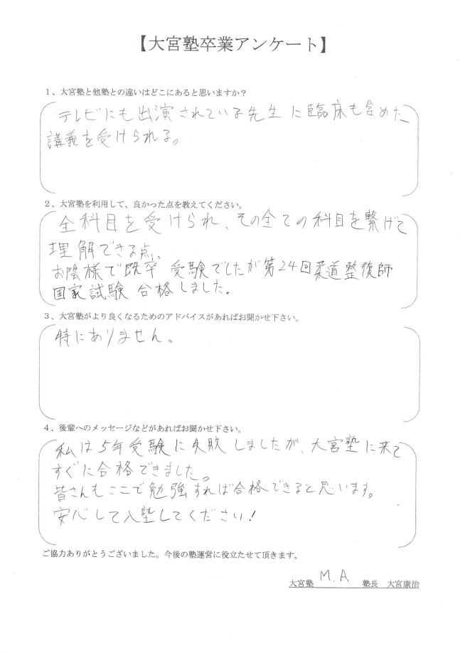
【M.Aさん 30代 男性】
１、鍼灸柔整国家試験対策予備校は沢山ありますが、大宮塾と他塾との違いはどこにありますか？
テレビに出演されている先生に臨床を含めた講義を受けられることがきっかけです。
２、大宮塾を理由して良かった点を教えて下さい。
全科目を受けられ、その全ての科目を繋げて理解できる点。
お陰様で既卒受験でしたが第24回柔道整復師国家試験に合格しました。
3、大宮塾がより良くなるためのアドバイスがあればお聞かせ下さい。
特にありません。
5、今後大宮塾へ入塾を希望する後輩へのメッセージなどがあればお聞かせ下さい。
私は5年受験に失敗しましたが、大宮塾に来てすぐに合格出来ました。
皆さんもここで勉強すれば合格できると思います。
安心して入塾して下さい！
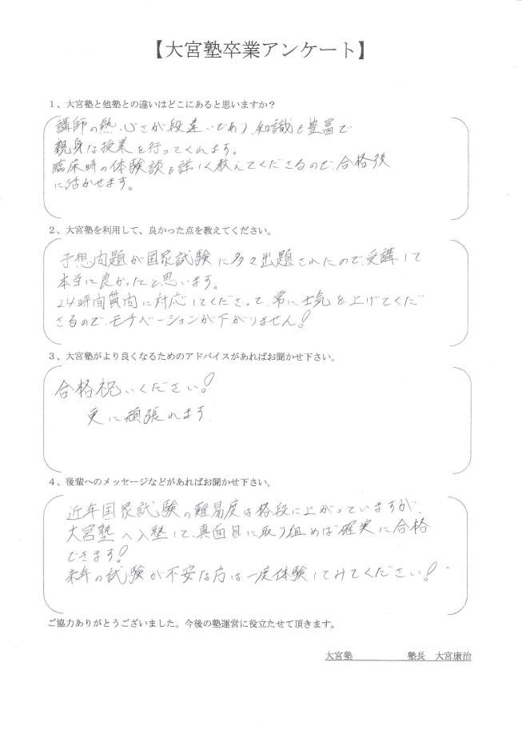
【Rさん 30代 女性】
１、鍼灸柔整国家試験対策予備校は沢山ありますが、大宮塾と他塾との違いはどこにありますか？
講師の熱心さが段違いであり、知識も豊富で親身な授業を行ってくれます。
臨床時の体験談も詳しく教えてくださるので合格後に活かせます。
２、大宮塾を理由して良かった点を教えて下さい。
予想問題が国家試験に多々出題されたので、受講して本当に良かったと思います。
24時間質問に対応してくださって、常に士気を上げてくださるので、モチベーションが下がりません！
3、大宮塾がより良くなるためのアドバイスがあればお聞かせ下さい。
合格祝い下さい！
更に頑張れます。
5、今後大宮塾へ入塾を希望する後輩へのメッセージなどがあればお聞かせ下さい。
近年、国家試験の難易度は格段に上がっていますが、大宮塾へ入塾して、真面目に取り組めば確実に合格できます！来年の試験が不安な方は一度体験してみて下さい！
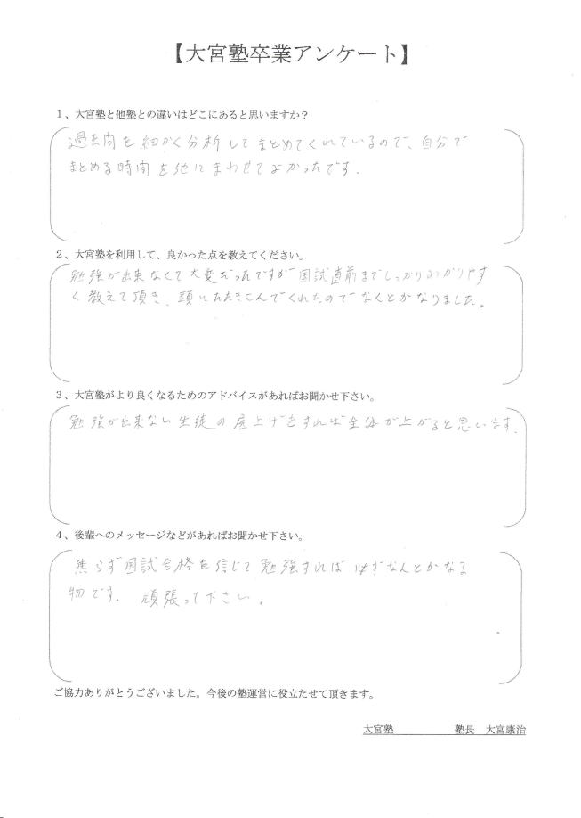
【Tさん 20代 男性】
１、鍼灸柔整国家試験対策予備校は沢山ありますが、大宮塾と他塾との違いはどこにありますか？
過去問を細かく分析してまとめてくれているので、自分でまとめる時間を他にまわせて良かったです。
２、大宮塾を理由して良かった点を教えて下さい。
勉強が出来なくて大変だったのですが、国家試験直前までしっかりわかりやすく教えて頂き、頭に叩き込んでくれたのでなんとか合格することができました。
3、大宮塾がより良くなるためのアドバイスがあればお聞かせ下さい。
勉強ができない生徒の底上げをすれば全体が上がると思います。
5、今後大宮塾へ入塾を希望する後輩へのメッセージなどがあればお聞かせ下さい。
焦らず国家試験合格を信じて勉強すれば必ずなんとかなるものです。
頑張ってください。
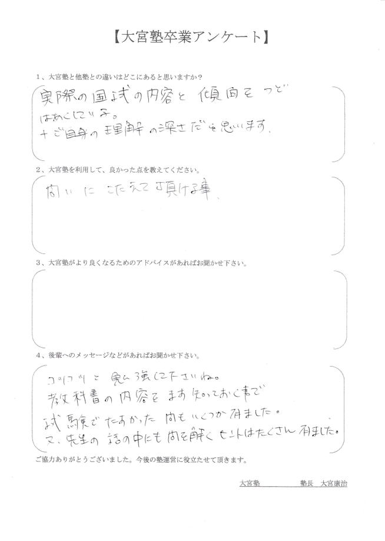
【Nさん 20代 男性】
１、鍼灸柔整国家試験対策予備校は沢山ありますが、大宮塾と他塾との違いはどこにありますか？
実際の国家試験の内容と傾向を都度、把握している。
また、大宮先生の理解の深さだと思います。
２、大宮塾を理由して良かった点を教えて下さい。
わからないこと些細な質問などの問に答えて頂かること。
3、大宮塾がより良くなるためのアドバイスがあればお聞かせ下さい。
特にありません。
5、今後大宮塾へ入塾を希望する後輩へのメッセージなどがあればお聞かせ下さい。
コツコツと勉強してくださいね。
教科書の内容をまず知っておくことで国家試験で助かった問題もいくつかありました。
また、先生の雑談等の話の中にも問題を解くヒントは沢山ありました。
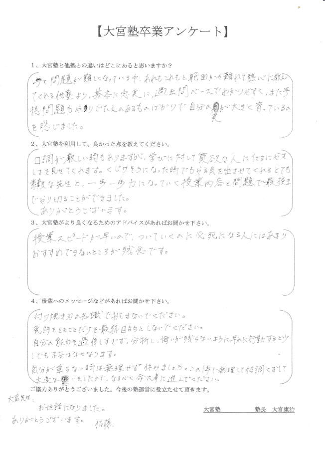
【Sさん 20代 女性】
１、鍼灸柔整国家試験対策予備校は沢山ありますが、大宮塾と他塾との違いはどこにありますか？
年々、問題が難しくなっている中、あれもこれも範囲から離れて熱心に教えてくれる。
他塾より基本に忠実に過去問ベースで分かりやすく、また、予想問題もやりごたえのあるものばかりで自分の実力が大きく育っているのを感じました。
２、大宮塾を理由して良かった点を教えて下さい。
口調が厳しい時もありますが、学びに対して貪欲な人にたまに優しさを見せてくれます。
くじけそうになった時でもやる気を出させてくれるとても素敵な先生と、一歩一歩力になっていく授業内容と問題で最後までやりきることが出来ました。
ありがとうございます。
3、大宮塾がより良くなるためのアドバイスがあればお聞かせ下さい。
授業スピードが早いので、ついていくのに必死になる人にはあまりオススメ出来ないところが残念です。
5、今後大宮塾へ入塾を希望する後輩へのメッセージなどがあればお聞かせ下さい。
付け焼き刃の知識で挑まないで下さい。
免許をとることだけを最終目的としないで下さい。
自分の能力を過信しすぎず、分析し、悔いが残らないように早めに行動すると少しでも不安はなくなります。
気分が乗らない時は無理せず休みましょう。
この1年で無理して体調を崩して大変な思いをしたので、なるべく命を大事に考えて進んで下さい。
大宮先生、お世話になりました。
ありがとうございました。

【H、Aさん 20代 男性】
１、なぜ大宮塾を選ばれたのでしょうか？
大宮塾の卒業生から他の塾より試験対策が充実していると聞いたので。
ここ最近は年々、国家試験が難しくなってきていて、特に柔道整復師の必修問題に向けてしっかりやってくれるみたいなので大宮塾を選びました。
２、鍼灸柔整国家試験対策予備校は沢山ありますが、大宮塾と他塾との違いはどこにありますか？
まず、先生の圧。
勉強しないといけないという空気を作ってくれます。
そのうえ、自分の熱も上がり国家試験に向かう気持ちがつきます。
内容は小テストを挟みながら授業を展開するので復習と対策を交互に勉強できます。
３、大宮塾を理由して良かった点を教えて下さい。
不安が減ります。あれだけやれば大丈夫と思えるくらい勉強をします。
そして、先生がほぼ何を聞いても答えてくれるので、どんどん相談できます。
４、大宮塾がより良くなるためのアドバイスがあればお聞かせ下さい。
私からはありません。
強いて言うなら、問題の解答と解説をした後に質問できるタイミングを毎回作ってもらいたいです。
5、今後大宮塾へ入塾を希望する後輩へのメッセージなどがあればお聞かせ下さい。
勉強は嘘をつかない。
やらなければ落ちる。やれば受かる。
1年後の国家試験に受かって笑顔でいる自分を想像して頑張ってください。
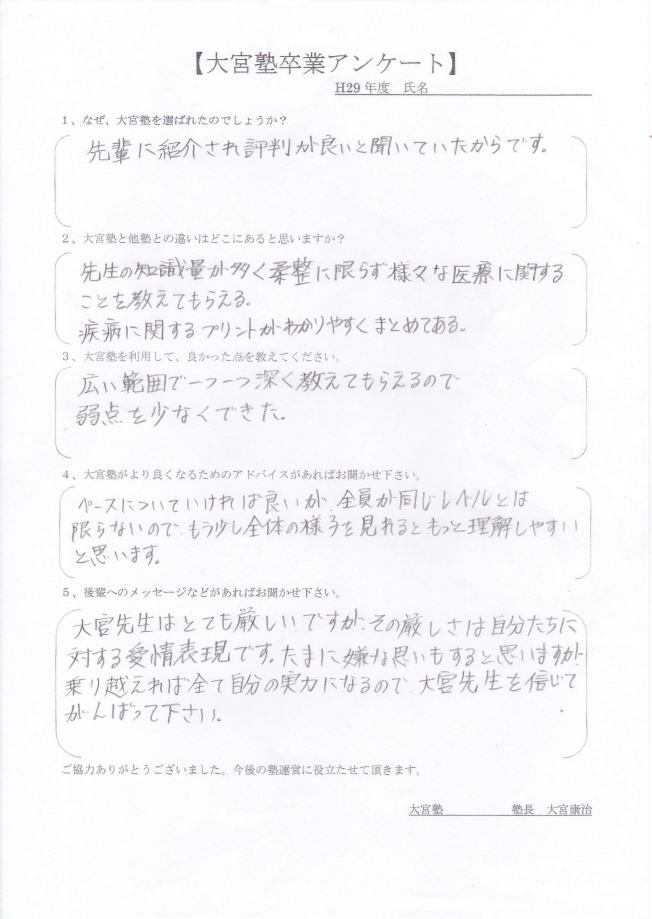
【Nさん 30代 男性】
１、なぜ大宮塾を選ばれたのでしょうか？
大宮塾を卒業した先輩に紹介され評判が良いと聞いていたからです。
２、鍼灸柔整国家試験対策予備校は沢山ありますが、大宮塾と他塾との違いはどこにありますか？
大宮先生の知識量が多く柔道整復理論・実技に限らず様々な医療に関することを教えてもらえる。
疾病に関するプリントがわかりやすくまとめてある。
３、大宮塾を理由して良かった点を教えて下さい。
広い範囲で一つ一つ深く教えてもらえるので弱点を少なく出来た。
４、大宮塾がより良くなるためのアドバイスがあればお聞かせ下さい。
ペースについて行ければ良いが、全員が同じレベルとは限らないので、もう少し全体の様子を見れるともっと理解しやすいと思います。
5、今後大宮塾へ入塾を希望する後輩へのメッセージなどがあればお聞かせ下さい。
大宮先生はとても厳しいですが、その厳しさは自分達に対する愛情表現です。
たまに、嫌な思いもすると思いますが、乗り越えれば全て自分の実力になるので大宮先生を信じて頑張って下さい。

【Y,Kさん 30代 男性】
１、なぜ大宮塾を選ばれたのでしょうか？
大宮塾を卒業した先輩に紹介されすごく良いとの事で聞いて、大宮先生が居たから。
２、鍼灸柔整国家試験対策予備校は沢山ありますが、大宮塾と他塾との違いはどこにありますか？
分かりやすい資料をくれる、わかりやすい授業、国家試験に出るポイントを明確にしてくれる。
３、大宮塾を理由して良かった点を教えて下さい。
渡された資料や受けていた授業の中から実際の国家試験に同じような問題がでた。
４、大宮塾がより良くなるためのアドバイスがあればお聞かせ下さい。
忙しい先生だとは思いますが、資料への最新の国家試験問題の追加をお願いします。
5、今後大宮塾へ入塾を希望する後輩へのメッセージなどがあればお聞かせ下さい。
きちんと授業を受けていれば国家試験には受かります。
頑張ってください。

【N，Sさん 30代 男性】
１、なぜ大宮塾を選ばれたのでしょうか？
ネットで調べて、体験授業を受けた時に授業の対応が良いと思ったのでこちらの塾を選びました。
２、鍼灸柔整国家試験対策予備校は沢山ありますが、大宮塾と他塾との違いはどこにありますか？
人数が少ない分、一人一人の生徒に目が届くのが利点だと思います。
３、大宮塾を理由して良かった点を教えて下さい。
国家試験対策として、出るであろうところを入念に進めてくれる。
４、大宮塾がより良くなるためのアドバイスがあればお聞かせ下さい。
プレッシャーをかかる加減を少し、抑えめにするともっと良いと思いました。
5、今後大宮塾へ入塾を希望する後輩へのメッセージなどがあればお聞かせ下さい。
大宮先生の出してくれるプリントや問題を見返していると授業の流れについて行きやすかったです。
ーーーーーーーーーーーーーーーーーーーー
【当塾への入塾試験内容】
①「なぜ、鍼灸師、マッサージ師、柔道整復師になりたいのですか？」
８００字程度の記述という内容になります。
②簡単な解剖生理の試験を行います。
国家試験レベルの問題です。
③面接
勉強時間が取れるのか課題をこなせるかなどを質問させてもらいます。
ーーーーーーーーーーーーーーーーーーーー
【第27回 鍼灸師国家試験 予想問題演習】
⇨【第27回 鍼灸マッサージ国家試験 無料模擬試験はこちら】
ーーーーーーーーーーーーーーーーーーーー
【鍼灸師教員募集・柔道整復師教員募集】
募集人数：若干名
1講義90分5,000～15,000円
1日3～6時間でご都合のいい時間に授業をしていただきます。
授業は19：00～22：00（平日）、土日10：00～18：00
※教員資格をお持ちの方を募集しております。
▶詳しく募集要項については、こちらをご覧ください。
ーーーーーーーーーーーーーーーーーーーー
セミナー依頼
90分 ￥50,000～（税込）
開業したけれど、実技に不安がある方にセミナーを開催いたします。
また、開業の際に業者をどうしたらよいかなど開業支援などもいたしております。
店舗の選び方から患者様の接し方まで。
出張依頼も受け付けております。（別途交通費を頂戴いたします。）
【次の様な方にお勧めです】
①テレビ、ラジオなどメディア出演依頼
②雑誌など取材依頼
③本の執筆依頼
④大学や専門学校でのセミナー依頼（ｾﾐﾅｰ内容についてはご相談下さい）
⑤会社、商工会議所、健康保険組合、老人保健施設などでの出張授業
⑥治療院に患者様を集める集客方法などのコンサルティング依頼
⑦エステティックを習いたい。
（全15回コースあり 1日7時間 エステティック資格発行）
⑧漢方を習いたい（コース受付可）
⑨整体、カイロプラクティックを習いたい
⑩鍼の治療法を習いたい
（美容鍼灸、吸い玉療法、経絡治療、花粉症治療、その他）
⑪今以上に手技を身に付けたい。
（ﾏｯｻｰｼﾞ、推拿、按摩、指圧、ｽﾄﾚｯﾁ、ﾀｲ古式ﾏｯｻｰｼﾞなど）
⑫美容院でマッサージを行ってお客様の満足度をあげたい。
⑬開業費用を安く抑えたい方
⑭開業のやり方を教えてほしい方
⑮その他様々なご要望にお応えいたします。
少しでも興味があるのようでしたら、まずは電話やﾒｰﾙにて無料相談をご利用下さい。
無料相談:03-6413-7803
【コンサルティング依頼先の１例】
開業したけれど、実技に不安がある方にセミナーを開催いたします。
また、開業の際に業者をどうしたらよいかなど開業支援などもいたしております。
店舗の選び方から患者様の接し方まで。
出張依頼も受け付けております。（別途交通費を頂戴いたします。）
【次の様な方にお勧めです】
①テレビ、ラジオなどメディア出演依頼
②雑誌など取材依頼
③本の執筆依頼
④大学や専門学校でのセミナー依頼（ｾﾐﾅｰ内容についてはご相談下さい）
⑤会社、商工会議所、健康保険組合、老人保健施設などでの出張授業
⑥治療院に患者様を集める集客方法などのコンサルティング依頼
⑦エステティックを習いたい。
（全15回コースあり 1日7時間 エステティック資格発行）
⑧漢方を習いたい（コース受付可）
⑨整体、カイロプラクティックを習いたい
⑩鍼の治療法を習いたい
（美容鍼灸、吸い玉療法、経絡治療、花粉症治療、その他）
⑪今以上に手技を身に付けたい。
（ﾏｯｻｰｼﾞ、推拿、按摩、指圧、ｽﾄﾚｯﾁ、ﾀｲ古式ﾏｯｻｰｼﾞなど）
⑫美容院でマッサージを行ってお客様の満足度をあげたい。
⑬開業費用を安く抑えたい方
⑭開業のやり方を教えてほしい方
⑮その他様々なご要望にお応えいたします。
少しでも興味があるのようでしたら、まずは電話やﾒｰﾙにて無料相談をご利用下さい。
無料相談:03-6413-7803
【コンサルティング依頼先の１例】
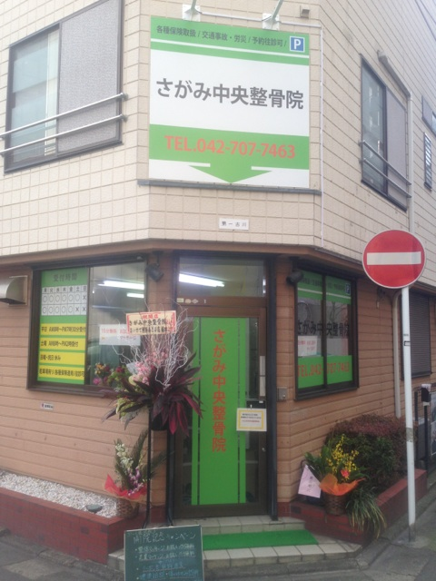
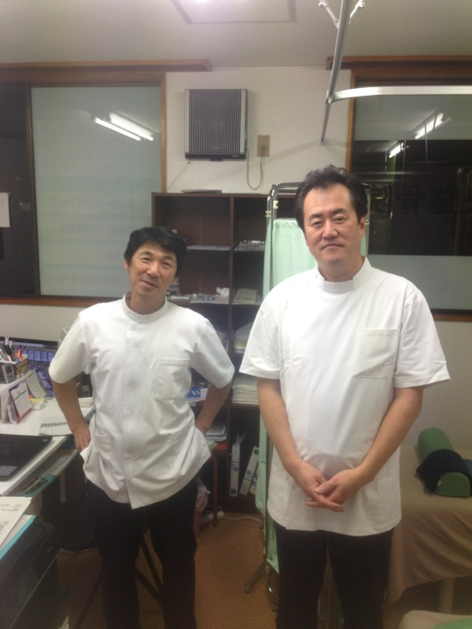
Ｔｅａｃｈｉｎｇ Ｂｅａｕｔｙ
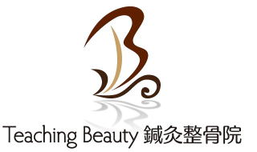
〒154-0014
東京都世田谷区新町3-21-1
さくらウェルガーデン3F
TEL：
03-6413-7803
→アクセス
診療時間
【通常診療】
月火金土
午前：09:00～13:00
午後：15:00～19:00
木曜日
午前：休診
午後：15:00～19:00
※当日予約可
休診日
水、木(午前)、日、祭日
夜間診療
月火木金土／19:00～21:00
※通常価格の1.5倍料金
※当日の19時までにご予約の場合のみ
※往診の場合も19時までにご予約下さい
早朝診療
月火木金土／07:00～09:00
※通常価格の2倍料金
※前日の19時までにご予約の場合のみ
交通事故・労災・
各種保険取扱い